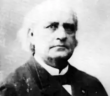
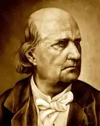

ЛЕКОНТ ДЕ ЛІЛЬ, Шарль (Leconte de Lisle, Charles — 22.10.1818, Сен-Поль, о. Реюньон — 18.07. 1894, Лувесьєн поблизу Версаля) — французький поет, теоретик мистецтва.
Народився у м. Сен-Поль на о. Реюньон у сім'ї фельдшера наполеонівської армії, котрий став згодом плантатором на о. Бурбон (тепер — Реюньон). Плантації та раби дісталися батькові завдяки вдалому шлюбові. Ще дитиною Леконт де Ліль захопився поезією, писав вірші, багато читав, віддаючи перевагу історичним романам В. Скот-та. Після приїзду у Францію навчався в університеті м.Ренн. Попри усі спроби, йому так і не вдалося опублікувати свою першу збірку "Серце і душа". Така ж незавидна доля спіткала й створені ним у столиці журнали. Через невдачу Леконт де Ліль ненадовго повернувся на о. Реюньон, звідки небавом був викликаний у Париж друзями-соціалістами. У цей час поет захоплювався ідеями Ш. Фур'є і Ф. Ламенне. З 1845 р. жив у Парижі, співпрацював із фур'єристськими виданнями "Фаланга" і "Мирна демократія", у яких публікував свої ранні вірші. Перші поетичні твори він створив під впливом відомого еллініста Луї Менара, й усі вони запліднені досвідом грецької міфолога, хоча молодий поет поводиться з нею досить вільно. Він механічно поєднує античну форму із соціалістськими ідеями свого часу.
Леконт де Ліль радісно сприйняв події революції 1848 р. Особливо гнівно він виступав проти рабства в усіх його проявах. Його діяльність була успішною, однак для самого поета скасування рабства обернулося розривом з родиною. Поразка революції принесла Леконту де Лілю розчарування в народі, який дозволив знову одягти на себе "ярмо рабства". Відтепер поет присвятив себе "чистому мистецтву". У 1852 р. вийшла друком збірка віршів "Античні вірші"("Poemes antiques", 1852) з передмовою теоретичного характеру. Поет відкрито говорить про занепад "ліричної поезії романтиків" та про народження нової літературної школи. Перше видання "Античних віршів" складалося з 31 твору. Видання 1874 р. було доповнене й містило 54 вірші. Основна їхня частина присвячена культурі Стародавньої Греції, перед красою якої Леконт де Ліль схилявся. Найвідоміші з поезій — "Єлена", "Хірон", "Ніоба". Окрім "грецьких" віршів, збірка містила також твори на індійські мотиви. Схід завжди цікавив поета, котрий був упевнений, що натхнення має прийти саме з екзотичних країн, де саме життя сповнене поезії. Завершуються "Античні вірші" "Різними віршами " головним героєм яких стала природа. На відміну від романтиків, у Леконта де Ліля природа не суголосна людині. Вона має власний зміст і непідвладна людям. У 1862 р. Леконт де Ліль видав "Варварські вірші" ("Poemes barbares", 1862—1878), присвячені цього разу культурам, зігнорованим греками та римлянами. Міфи "примітивних" народів цікавлять поета не менше, ніж класичні зразки. У цій збірці він звертається до біблійних сюжетів, міфів Стародавнього Єгипту, Персії та Полінезії. Особливе місце посідають легенди і перекази народів Півночі. Екзотика, знову ж таки, необхідна поетові для літературного експерименту з формою. Саме форму ідеалізували поети, котрі ввійшли до гурту, керованого Леконтом де Лілем, що отримав назву "Парнас". До гурту входили такі поети, як К. Мендес, Т. де Банвіль, Ж.М. де Ередіа і Ф.А. Сюллі-Прюдом. Організаційне оформлення гурт отримав завдяки виданню К. Мендеса "Ревю фантазист" (1861). У Парижі заговорили про з'яву поетів-язичників, пантеїстів, які творять "мистецтво задля мистецтва". Це був зручний спосіб відвернутися від дійсності, яка багатьом мистцям, утім числі й Г. Флоберові, уявлялася глухими часами. 1866 р. поети видали збірку віршів під назвою "Сучасний Парнас", ім'я якої закріплюється за новою поетичною школою. "Парнасці" пропонують ліризмові поезії романтиків протиставити нейтральність, майже знеособленість. За їхньою теорією, вірші мають стати метафізичними, вбраними в карбовані пластичні форми. Прикметно, що Леконт де Ліль, попри свій "парнасизм", не цурався і сучасності, почасти пристрасно розвінчуючи ті чи інші її вади. Підтвердженням цього може слугувати, приміром, сонет "До сучасників":Ви підло живете, без почуття, без мрій, Безплідні, немічні, не палені журбою,Навіки злякані кривавою добою,Фальшиві, влізливі, захланні, як пирій.Загрузнувши в багні та в злобності жахній,Ви цей нужденний світ загидили собою, Розпусним подихом, нікчемністю, ганьбою,Все обернули, все в мертвотний бруд і гній.О люди, близько час, коли на кулі злотаБогів убивці — ви, неначе та хробота,Прогризши аж до скель всю землю навкруги, Навзаєм нищачись, отруйні та скажені,Все набиваючи монетами кишені,Безглуздо помрете від смутку і нудьги.(Пер. Д. Павличка)Життєвий шлях поет завершив в зеніті слави. Леконт де Ліль став членом Французької академії, куди він прийшов на місце В. Гюго. Він був також нагороджений орденом Почесного легіону. За життя поет видав ще одну збірку віршів під назвою "Трагічні вірші" ("Poemes tragiques", 1884). Посмертно вийшла збірка "Останні вірші" ("Derniers poemes", 1895). Незважаючи на те, що "парнасці" стали об'єктом нападок і критики з боку багатьох мистців, які піддавали сумніву вартість поезії цього гурту, вони значно збагатили французьку та світову поезію. В Україні окремі вірші Леконта де Ліля переклали П. Грабовський, В. Щурат, М. Драй-Хмара, М. Зеров, М. Терещенко, Д. Павличко, Д. Паламарчук, М. Орест. С. Фомін